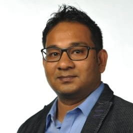
Asif I. Khan
Principal Investigator. Associate Professor, School of Electrical and Computer Engineering, with a courtesy appointment in Materials Science and Engineering, Georgia Institute of Technology.

Principal Investigator. Associate Professor, School of Electrical and Computer Engineering, with a courtesy appointment in Materials Science and Engineering, Georgia Institute of Technology.
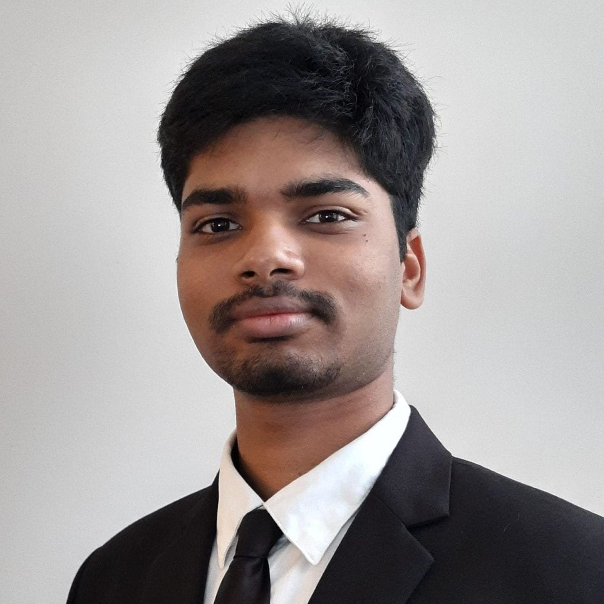
Doctoral student, School of Electrical and Computer Engineering. B.Tech. in Electrical Engineering, Indian Institute of Technology Palakkad, 2019. LinkedIn
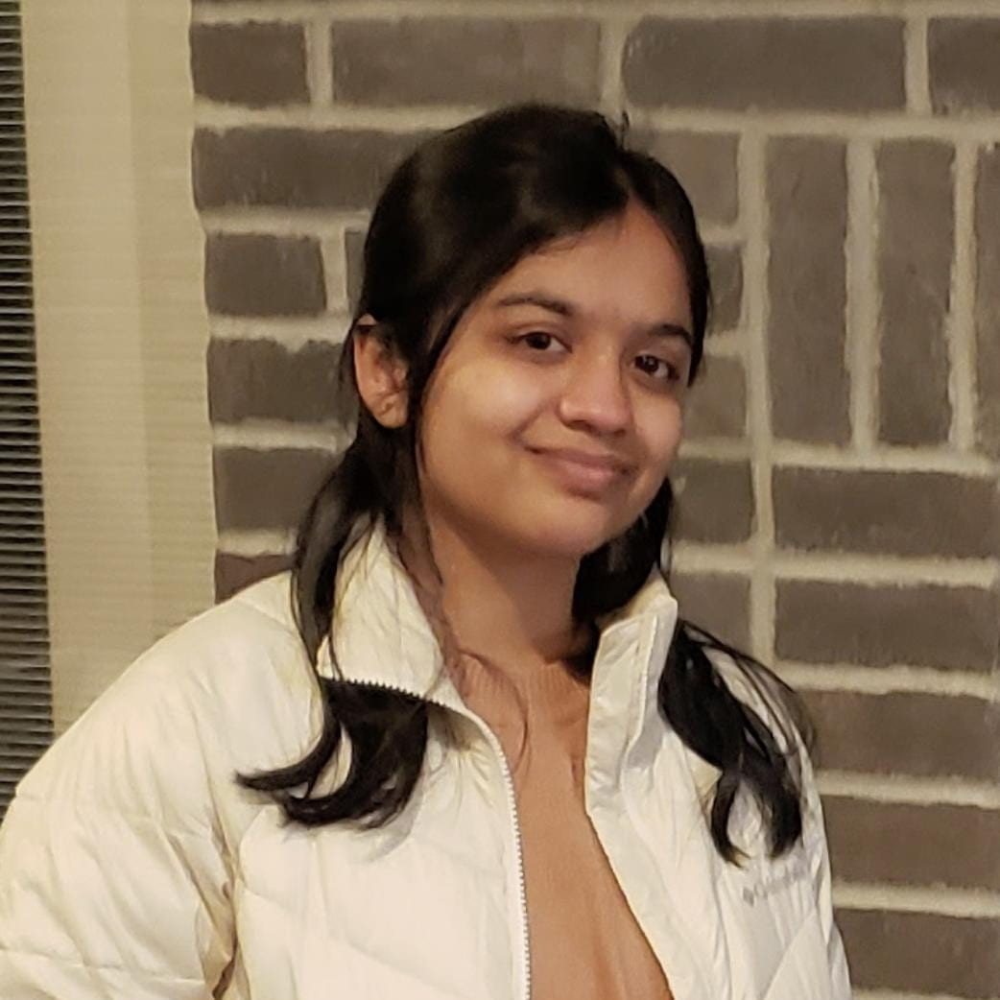
Doctoral student, School of Electrical and Computer Engineering. B.Tech. in Electrical Engineering, Indian Institute of Technology Palakkad, 2022. LinkedIn

Doctoral student, School of Electrical and Computer Engineering. M.S. in Electrical and Computer Engineering, Purdue University, 2023. LinkedIn
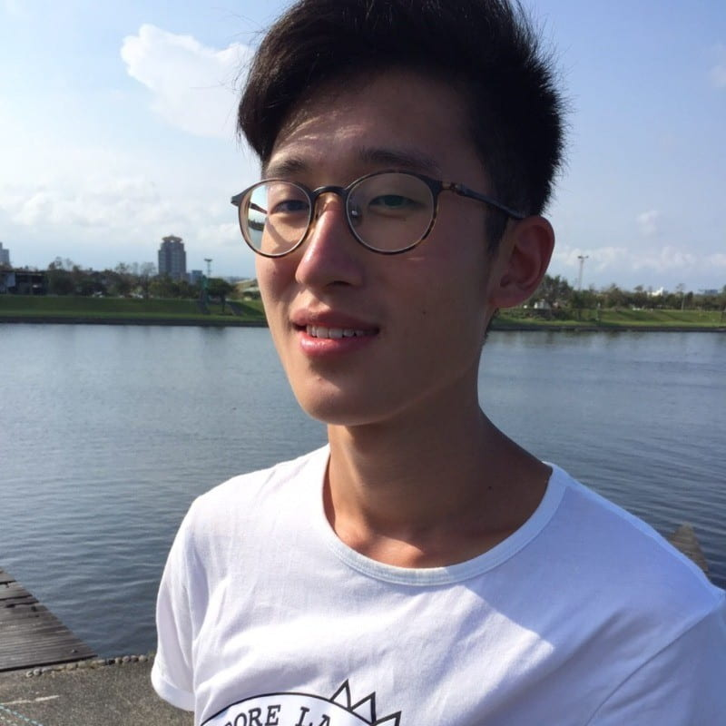
Doctoral student, School of Electrical and Computer Engineering. M.S. in Photonics and Optoelectronics, National Taiwan University, 2021. LinkedIn
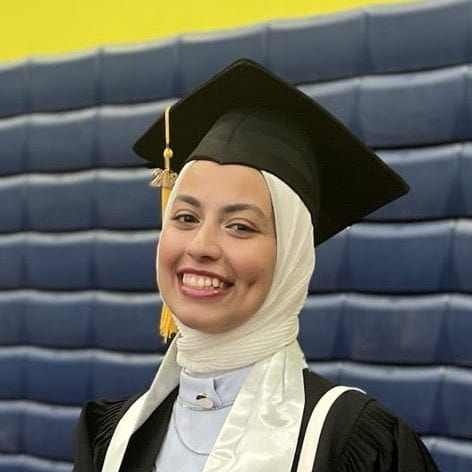
Doctoral student, School of Electrical and Computer Engineering. B.S. in Electronics and Communication Engineering, The American University in Cairo, Egypt, 2023. LinkedIn
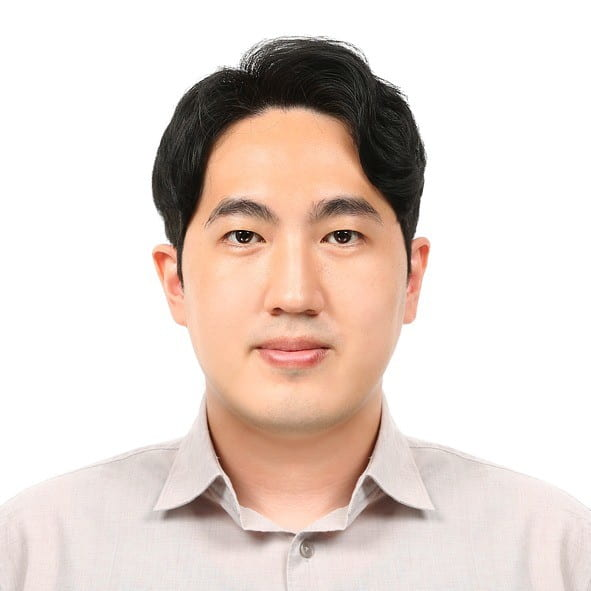
Doctoral student, School of Electrical and Computer Engineering. B.S. in Materials Science and Engineering, Seoul National University, 2015. LinkedIn
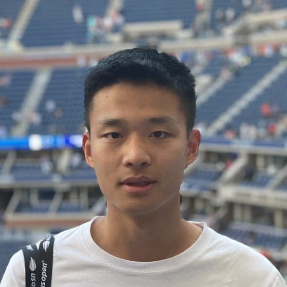
Doctoral student, School of Electrical and Computer Engineering. B.S. in Physics, University of California, Santa Barbara, 2022. LinkedIn
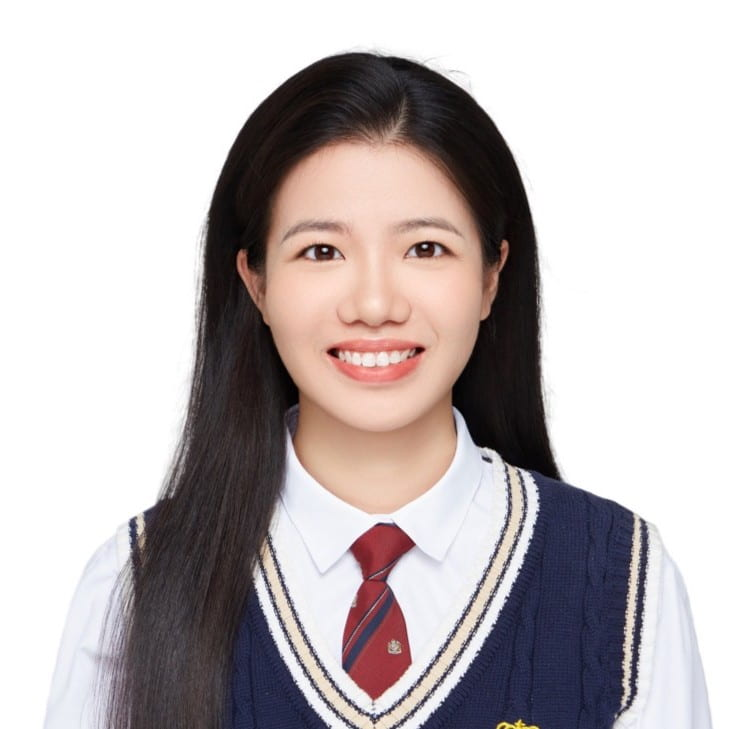
Doctoral student, School of Electrical and Computer Engineering. M.S. in Electrical and Computer Engineering, Georgia Institute of Technology, 2025. LinkedIn
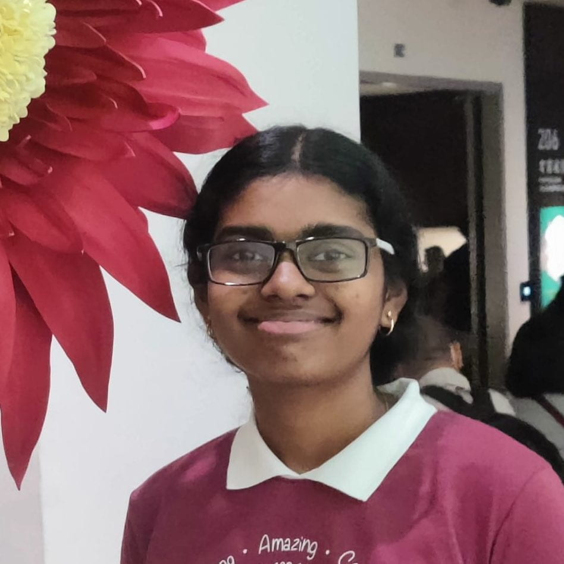
Doctoral student, School of Electrical and Computer Engineering. M.Tech. in Electrical Engineering, Indian Institute of Technology Bombay, 2025. LinkedIn
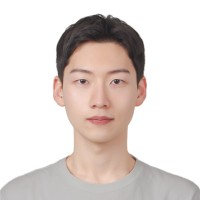
Graduate student, School of Electrical and Computer Engineering. M.S. in Electronic Electrical Engineering, Sungkyunkwan University, 2026. LinkedIn
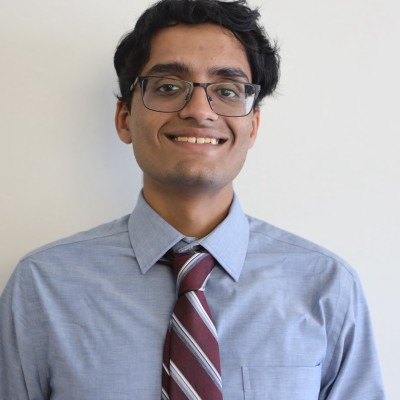
Undergraduate student. LinkedIn

Ph.D. ECE, 2026. Texas Instruments. B.S. in Electrical and Electronic Engineering, Khulna University of Engineering & Technology, 2017. LinkedIn
Undergraduate and M.S. student, left 2026. LinkedIn
Ph.D. ECE, Fall 2024. Senior Process Engineer, SK hynix. Ph.D. thesis: Ferroelectric Field Effect Transistors (FEFETs) With Gate Stack Engineering for Embedded and Storage Memory Applications. LinkedIn
Postdoctoral researcher at Georgia Tech, 2022-2024.
Ph.D. ECE, Spring 2023. Device Engineer, Intel Corporation. Ph.D. thesis: Ferroelectric Field Effect Transistors for Embedded Memory Applications: An Investigation of Key Challenges and Solutions. LinkedIn
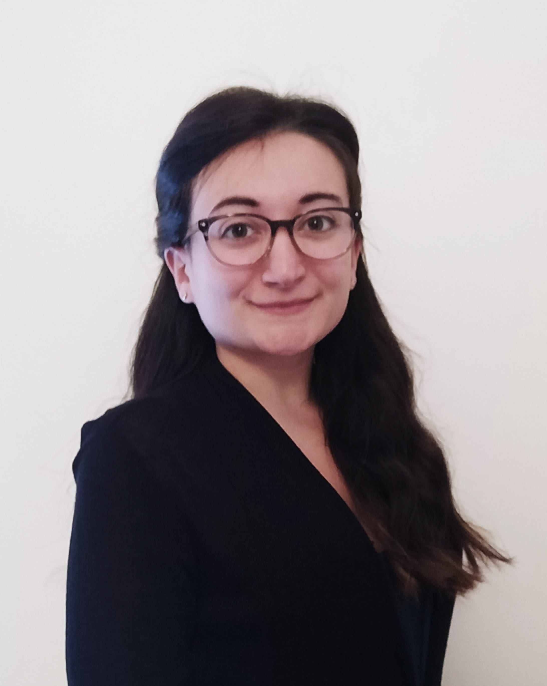
Ph.D. MSE, Summer 2022. Process Engineer, TEL Technology Center. Ph.D. thesis: Advanced Microstructural Characterization of Ferroelectric and Antiferroelectric Fluorite-Structure Binary Oxide Thin Films for Memory Applications. LinkedIn
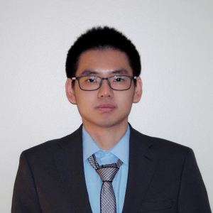
Ph.D. ECE, Spring 2022. Device Reliability Engineering, Micron Technology. Ph.D. thesis: Ferroelectric Field-Effect Transistors for Future Non-Volatile Memory: Challenges and Solutions.
M.S. ECE, Spring 2020. Process Integration Engineer, TSMC.